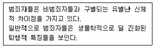
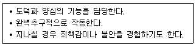
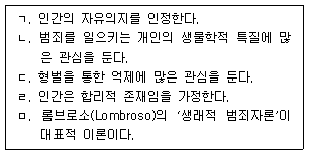
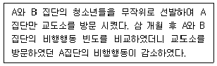
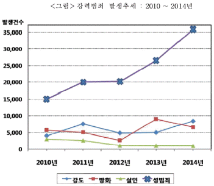
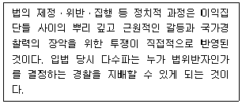
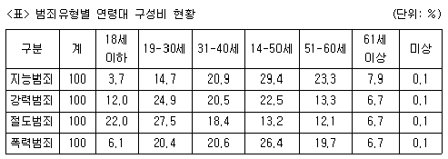
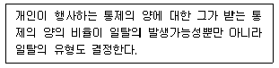
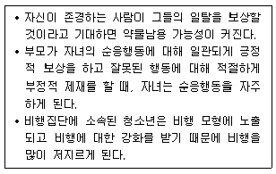

경비지도사-2차(범죄학) (2015-11-21 기출문제)
1. 범죄학의 학문적 특성으로 옳지 않은 것은?
- 종합과학적 특성을 가지고 있다.
- 하나의 범죄행위에 대해서도 다양한 해석이 가능하다.
- 범죄를 바라보는 관점이 단일하다는 특징이 있다.
- 학제 간 연구가 이루어질 수 있다.
(정답률: 알수없음)

2. 다음의 지문과 관련이 있는 학자는?

- 서덜랜드(Sutherland)
- 롬브로조(Lombroso)
- 갓프레드슨과 허쉬(Gottfredson & Hirshi)
- 맛짜(Matza)
(정답률: 알수없음)
3. 화이트칼라 범죄에 속하지 않는 행위는?
- 기업의 탈세
- 기업 사무실 침입절도
- 기업의 공정거래 관련 법규 위반
- 증권사 직원의 주식 내부자 거래
(정답률: 알수없음)
4. 마약류 중 향정신성의약품으로 옳은 것은?
- 코카인(cocaine)
- 헤로인(heroin)
- 프로포폴(propofol)
- 모르핀(morphine)
(정답률: 알수없음)
5. 다음에서 프로이드(S. Freud)가 제시한 인성의 요소는?

- id(원초아)
- ego(자아)
- super ego(초자아)
- libido(성적 에너지)
(정답률: 알수없음)
6. 사회 내 처우로 볼 수 없는 것은?
- 휴대금품의 영치
- 보호관찰
- 사회봉사명령
- 수강명령
(정답률: 알수없음)
7. 법률적으로 범죄가 성립하기 위한 요건이 아닌 것은?
- 책임성
- 위법성
- 문화성
- 구성요건해당성
(정답률: 알수없음)
8. 특정 범죄자에 대한 보호관찰 및 전자장치 부착 등에 관한 법률상 위치추적 전자장치의 부착을 청구할 수 없는 것은?
- 성폭력범죄
- 미성년자 대상 유괴범죄
- 살인범죄
- 모욕범죄
(정답률: 알수없음)
9. 고전주의 범죄학에 관한 설명으로 옳은 것을 모두 고른 것은?

- ㄱ, ㄴ
- ㄷ, ㄹ
- ㄱ, ㄴ, ㅁ
- ㄱ, ㄷ, ㄹ
(정답률: 알수없음)
10. 성매매알선 등 행위의 처벌에 관한 법률상 명시된 ‘성매매피해자’가 아닌 것은?
- 위계, 위력, 그 밖에 이에 준하는 방법으로 성매매를 강요당한 사람
- 성매매를 하도록 알선ㆍ유인된 청소년
- 성매매 장소 주변에 거주하는 사람
- 성매매 목적의 인신매매를 당한 사람
(정답률: 알수없음)
11. 학교폭력 가해자의 일반적 특성이 아닌 것은?
- 충동에 대한 통제력이 강하다.
- 죄책감이나 동정심이 적은 편이다.
- 권력과 지배에 대한 욕구가 강하다.
- 폭력적 성향이 강한 편이다.
(정답률: 알수없음)
12. 허칭스와 메드닉(Hutchings & Mednick)의 입양아 연구에 관한 설명으로 옳지 않은 것은?
- 입양아의 범죄성에 생부와 양부가 미치는 영향을 연구하였다.
- 유전이 범죄에 영향을 미친다고 주장하였다.
- 생부가 범죄자일 때 보다 양부가 범죄자일 경우, 입양아가 범죄자가 될 확률이 더 크다고 보았다.
- 환경과 유전의 영향이 엄밀히 분리되지 못한 연구였다는 비판도 있다.
(정답률: 90%)
13. 조직범죄(organized crime)의 일반적인 특성이 아닌 것은?
- 위계성
- 위협이나 무력 등 불법적 수단 사용
- 불법적 이익 추구
- 일시성
(정답률: 알수없음)
14. “미국의 범죄문제가 다른 선진국들에 비해 훨씬 심각한 이유는 가족, 교육, 정치등 다른 사회제도들의 힘보다 경제제도의 힘이 지나치게 강하기 때문이다.”라고 주장한 학자는?
- 메스너와 로젠펠드(Messner & Rosenfeld)
- 클로워드와 올린(Cloward & Ohlin)
- 서덜랜드(Sutherland)
- 울프갱과 페라쿠티(Wolfgang & Ferracuti)
(정답률: 알수없음)
15. 경찰청에서 발행하는 공식통계가 아닌 것은?(문제 오류로 실제 시험에서는 1, 3번이 정답처리 되었습니다. 여기서는 1번을 누르면 정답 처리 됩니다.)
- 범죄백서
- 경찰통계연보
- 범죄분석
- 경찰백서
(정답률: 알수없음)
16. 성매매에 대하여 금지주의(abolitionism)를 채택하고 있는 국가는?
- 프랑스
- 스페인
- 이탈리아
- 태국
(정답률: 알수없음)
17. 재산범죄가 아닌 것은?
- 손괴
- 사기
- 절도
- 강간
(정답률: 알수없음)
18. 다소 긴 기간 동안 심리적 냉각기를 거치며 다수의 장소에서 4인 이상 살해하는 것은?
- 표출적 살인
- 연쇄 살인
- 도구적 살인
- 연속 살인
(정답률: 알수없음)
19. 범죄율 및 처벌의 성별 차이를 설명하는 이론 또는 가설이 아닌 것은?
- 남성성 가설
- 권력통제이론
- 기사도 가설
- 자아훼손이론
(정답률: 알수없음)
20. 브랜팅햄과 파우스트(Brantingham & Faust)의 범죄예방 구조모델 접근법과 대상이 바르게 짝지어진 것은?
- 1차적 예방과 일반대중
- 2차적 예방과 범죄자
- 3차적 예방과 우범자 집단
- 4차적 예방과 일반대중
(정답률: 알수없음)
21. 범죄피해조사에 관한 설명으로 옳은 것은?
- 범죄예방대책 자료로 활용할 수 없다.
- 조사대상자에게 범죄피해에 대한 경험이 있는지를 묻고 응답을 통해 수집한다.
- 범죄피해자의 특성을 파악하기 어렵다.
- 공식통계에 비해 암수범죄를 파악하기 어렵다.
(정답률: 알수없음)
22. 다음 내용의 연구방법에 해당하는 것은?

- 통계자료분석
- 설문조사
- 사례연구
- 실험연구
(정답률: 알수없음)
23. 다음 그림에 관한 설명으로 옳은 것은?

- 살인 발생건수는 2011년 이후 지속적으로 증가하였다.
- 2011년 대비 2014년의 성범죄 발생건수는 100 % 이상 증가하였다.
- 2012년 강도 발생건수는 2014년 성범죄 발생건수의 1/3이하이다.
- 2014년 방화 발생건수는 전년 대비 증가 하였다.
(정답률: 알수없음)
24. 자연적 감시, 영역성 강화, 접근통제의 기본전략을 배경으로 한 범죄예방은?
- BBP
- COP
- CPTED
- MMPI
(정답률: 알수없음)
25. 에크와 스펠만(Eck & Spellman)이 제시한 탐색-분석-대응-평가 단계를 통한 경찰활동은?
- 전통적 경찰활동
- 문제지향적 경찰활동
- 원시적 경찰활동
- 무관용 경찰활동
(정답률: 알수없음)
26. 소년법상 소년보호처분에 해당하지 않는 것은?
- 수강명령
- 사회봉사명령
- 즉결심판
- 보호관찰관의 단기보호관찰
(정답률: 알수없음)
27. 가정폭력범죄의 처벌 등에 관한 특례법상 가정구성원에 해당하지 않는 사람은?
- 이혼한 전처
- 동거하지 않는 사실상 양친
- 동거하지 않는 계부모
- 동거하지 않는 4촌
(정답률: 알수없음)
28. 현 정부가 표방한 4대 사회악(惡)에 해당하는 것은?
- 불량식품
- 주취폭력
- 보이스피싱
- 조직폭력
(정답률: 알수없음)
29. 다음의 주장을 한 학자는?

- 볼드(Vold)
- 뒤르켐(Durkheim)
- 필(Peel)
- 밀러(Miller)
(정답률: 알수없음)
30. 「범죄와 형벌」이라는 저서에서 처벌(형벌)의 엄격성, 확실성, 신속성을 통해 범죄를 억제(deterrence)할 수 있다고 주장한 학자는?
- 머튼(Merton)
- 사이크스와 맛짜(Sykes & Matza)
- 허쉬(Hirschi)
- 베카리아(Beccaria)
(정답률: 알수없음)
31. 아동ㆍ청소년의 성보호에 관한 법률상 신상정보 공개 고지명령의 집행권자는?
- 경찰서장
- 여성가족부장관
- 관할 보호관찰소장
- 관할 지방검찰청 검사
(정답률: 알수없음)
32. 비대면성과 익명성을 특징으로 가상공간에서 발생하는 범죄는?
- 조직폭력범죄
- 살인범죄
- 도박범죄
- 사이버범죄
(정답률: 100%)
33. 형벌의 종류 중 자유형에 해당하지 않는 것은?
- 징역
- 구류
- 벌금
- 부정기형
(정답률: 70%)
34. 범죄통계 상 연령대 구성비를 아래 그래프와 같이 나타낼 때, 허쉬와 갓프레드슨(Hirschi & Gottfredson)이 주장한 연령과 범죄율의 관계에 부합하는 범죄유형은?

- 지능범죄
- 강력범죄
- 절도범죄
- 폭력범죄
(정답률: 알수없음)
35. 범죄학 연구에 관한 설명으로 옳지 않은 것은?
- 범죄의 현상ㆍ원인ㆍ예방이 연구범위에 포함된다.
- 범죄에 대한 대응은 연구범위에서 제외한다.
- 계량적 연구가 가능하다.
- 사회과학적 연구방법이 보편적으로 활용될 수 있다.
(정답률: 알수없음)
36. 모피트(Moffitt)의 발전이론과 관련이 없는 것은?
- 사회자본(social capital)
- 성숙격차(maturity gap)
- 생애지속형 범죄자
- 청소년기 한정형 범죄자
(정답률: 알수없음)
37. 다음은 어느 이론과 관련 있는 설명인가?

- 사회해체이론
- 통제균형이론
- 자기통제이론
- 권력통제이론
(정답률: 알수없음)
38. 머튼(R. Merton)의 아노미이론에서 알코올중독자에게서 나타나는 적응양식은?
- 도피형(retreatism)
- 혁신형(innovation)
- 의례형(ritualism)
- 동조형(conformity)
(정답률: 80%)
39. 애그뉴(R. Agnew)의 일반긴장이론에 관한 설명으로 옳지 않은 것은?
- 기본적으로 비행을 축적된 스트레스의 결과로 본다.
- 개인이 받는 부정적 압력보다 긍정적 압력을 비행의 원인으로 주목한다.
- 긍정적 자극의 소멸은 비행의 가능성을 증가시킨다고 예측한다.
- 부정적 감정이 긴장과 비행을 매개한다고 본다.
(정답률: 알수없음)
40. 다음 현상을 설명하는 이론은?

- 사회학습이론
- 사회유대이론
- 자기통제이론
- 낙인이론
(정답률: 알수없음)